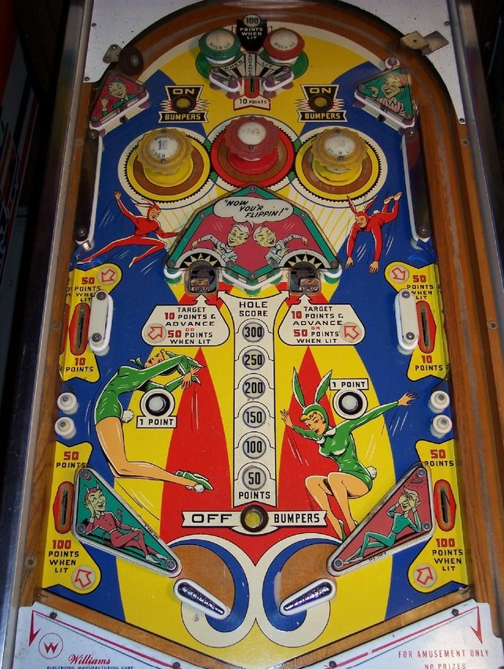

Not to be confused with the much more common Jumping Jack (Gottlieb, 1973), the 2-player version of Jack in the Box.
The governing feature on Jumpin' Jack's is the Hole Score, which starts as low as 50 points and is advanced 50 points at a time up to a maximum of 300. To add 50 points to the Hole Score, plunge the center top lane when the green passive bumpers are lit (alternates based on 1-point switch hits) or shoot the drop target in front of either gobble hole. To score the Hole Score and reset it to 50 points, you must shoot into a gobble hole itself, ending the ball. Both drop targets will reset if both are knocked down. The status of the Hole Score and drop targets persists across players, balls, and games.
When the Hole Score is 150 or 250 points, the middle side lanes will be lit for 50 points instead of 10.
When the Hole Score is maxed out at 300 points:
The red pop bumper always scores 1 point. Yellow pop bumpers score 1 point or 10 when lit; they are lit by pressing the On Bumpers buttons near the yellow bumpers themselves, and are unlit by pressing the Off Bumpers button near the flippers. Slingshots always score 1 point.
There are no gates, center posts, kickbacks, or extra balls. The Hole Score is only awarded by shooting a gobble hole, not from any other drain. Tilt ends game, but only for the player who tilted.
The below picture of Jumpin' Jack's' playfield was taken from Pinside, where it is listed as image #25876.
